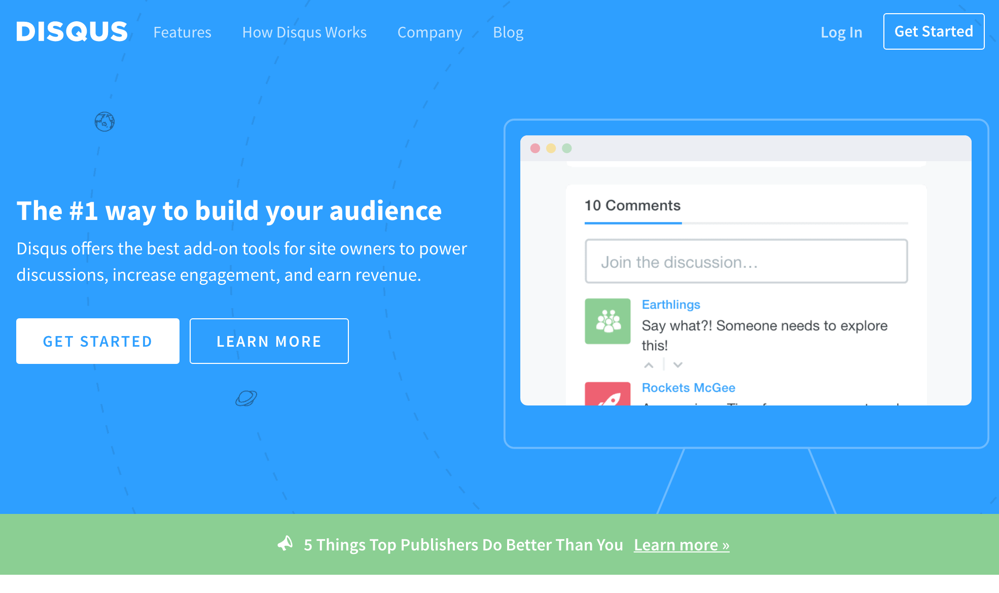
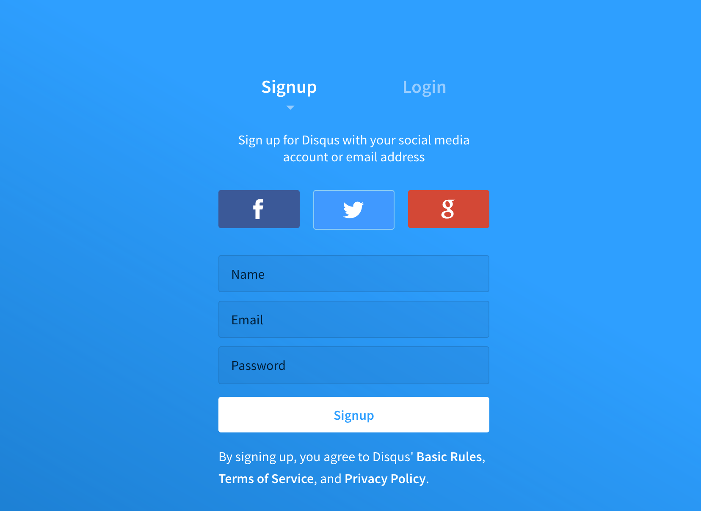
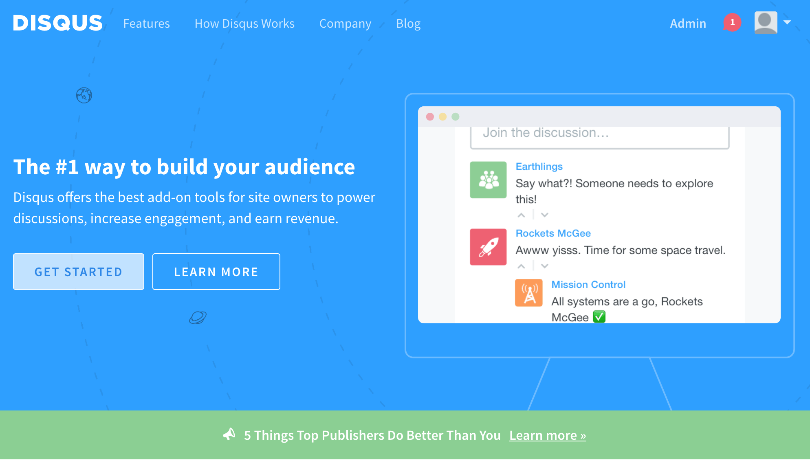
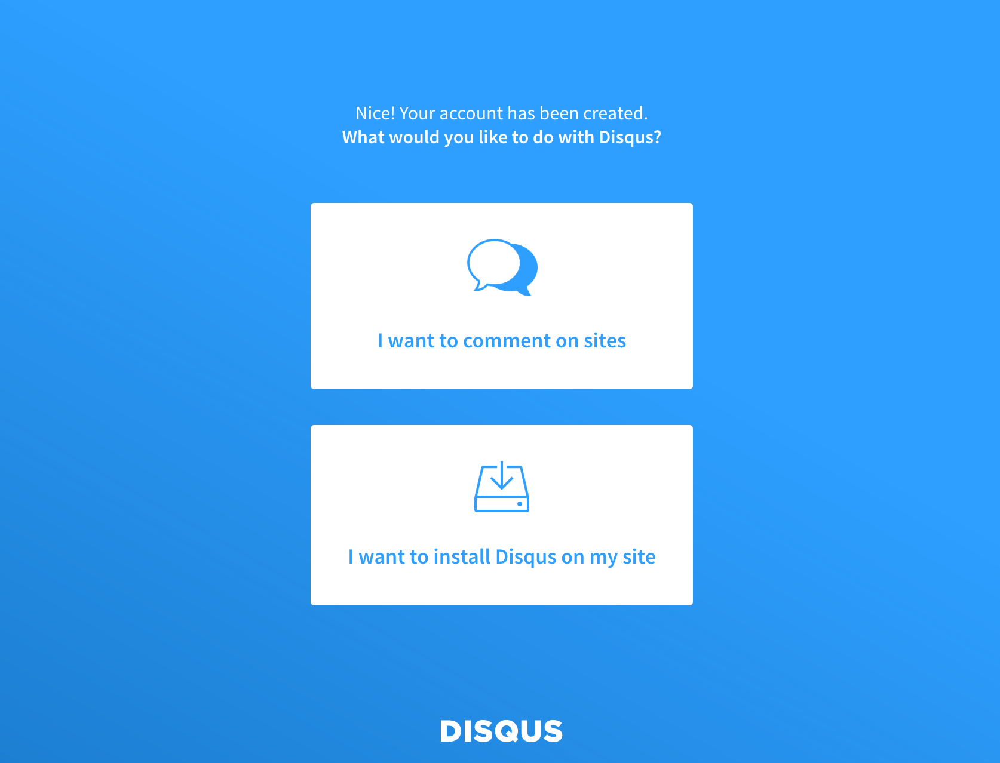
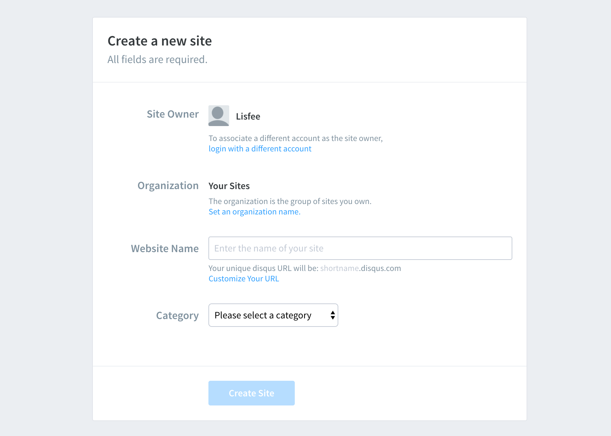
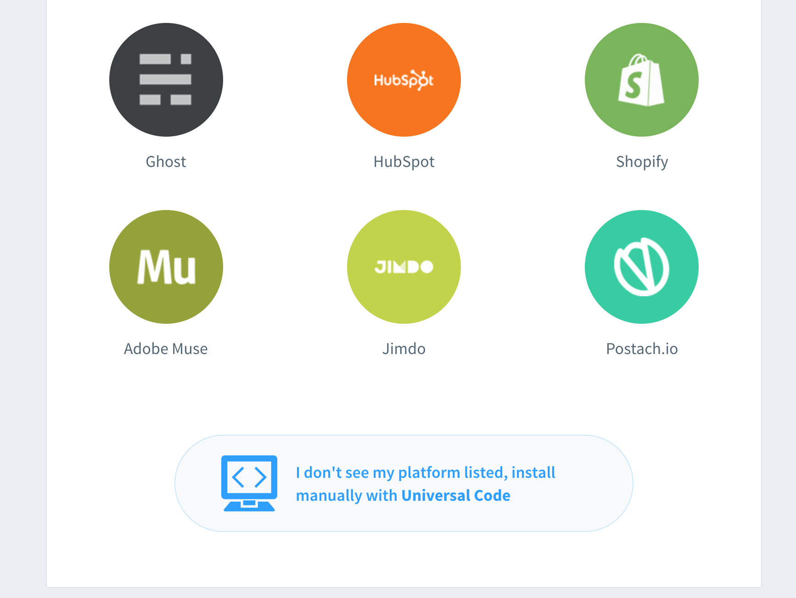
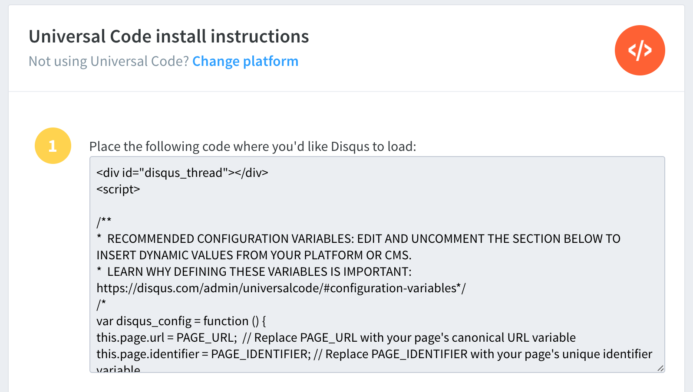
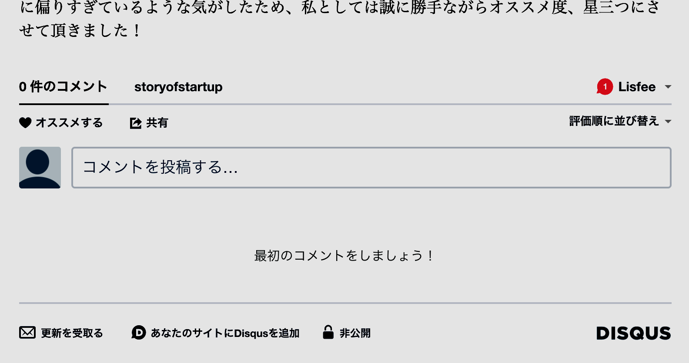

以前の記事（11月6日付）で、フォーカスマーケティングという手法について紹介し、また、昨日の記事（11月12日付）ではキャズム理論を少し紹介しました。そしてこれら２作品に共通する点は、自社の商品やサービス、知名度といったものをブレイクスルーさせるために有効な手段の一つとして、特定のカテゴリーに属するユーザーとコミュニケーションを取ることの重要性が指摘されている点です。
今ご覧いただいているこのブログは、更新を真面目に実施すると決めて１週間ほどなのですが、改めて読者の方と会話をする手段が全くないことに気づきました。。これではいくら本を読んでも全く実践できていない点で全く意味がないと深く反省し、簡単に導入できるDISQUSというサービスを使って、讀者の方向けにコメント欄を挿入してみました。（実際にコメントされるかどうかは別としまして・・・汗）
せっかくなので、このサービスの導入手順について簡単にご紹介したいと思います。
まず、DISQUSのWEBサイトにアクセスします。そして、右上の’Get Started（始める）’ボタンをクリックしてください。
会員登録画面が出てくるのでメールアドレスやパスワード等を登録してください。
すると、ログインした状態でもう一度最初のページに戻ってきます。今度は画面中央左側にある’GET STARTED’をクリックし、
すると上下二択で質問が出てきますので、ここでは「’I want to install Disqus on my site’（自分のサイトにDISQUSを埋め込みたい）」という下の選択肢をクリックしてください。
すると、あなたのWEBサイトの名前は何といいますか？という質問が出てきますので、ここは適当にドメイン名などを記入しておきましょう（もしドメインがなければあなたのニックネームなど、適当でいいはずです）。そして’Create Site’ボタンを押すと、
また次のページに飛ぶので、ここでは’I don’t see my platform listed, install manually with Univeral Cod（プラットフォームを選ばずに、自分でコードを埋め込む）’を選びましょう。
そして最後です。自分専用のコードが画面上に表示されるので、このコードをHTML上に貼り付ければ完了です！（PAGE_URLと、PAGE_IDENTIFIERの二つのみ、ご自身の値で更新してください。）
無事私のこのブログサイトにも導入することができました。
以上、今回は簡単にユーザとのコミュニケーションを取れるツールであるDISQUSの導入について紹介いたしました。ツール自体は何でもいいと思いますが、あるに越したことはないですね！お持ちのブログやサイトでまだそのような実装をされていない方は是非検討してみてください。